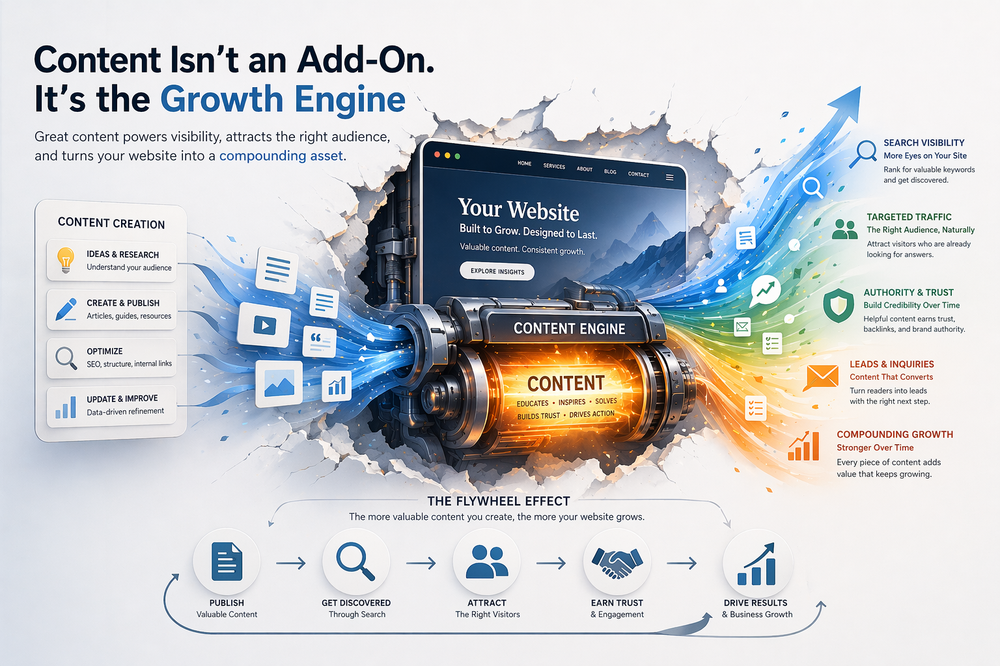

不是寫文章，而是做流量
每一篇內容都不是為了填滿網站， 而是為了建立搜尋入口、累積曝光，並把對的流量帶進網站。
Aplus 致力於協助企業建立 AI SEO 內容獲客系統， 透過關鍵字策略、內容生成、文章發佈與轉換設計， 讓網站從靜態展示頁，進一步成為可以長期累積流量與潛在客戶的成長引擎。
很多企業不是沒有網站，而是網站上線之後， 長期沒有更新、沒有內容、沒有自然流量， 最後也無法持續帶來詢問與客戶。
我們觀察到，問題通常不在於少了一個頁面， 而是在於缺少一套能長期運作的內容與流量機制。 因此，Aplus 希望建立的不是單點工具， 而是一套從策略到執行都能真正落地的 AI SEO 系統。
我們相信，企業網站不應該只是品牌介紹頁， 而應該是能透過搜尋與內容，持續累積曝光、流量與商機的數位資產。

我們不只是協助產出文章，而是把關鍵字、內容、發佈與轉換整合成一套可持續運作的系統。
每一篇內容都不是為了填滿網站， 而是為了建立搜尋入口、累積曝光，並把對的流量帶進網站。
從關鍵字策略、主題規劃、文章生成，到發佈與轉換設計， 建立一套企業可實際運作的內容獲客流程。
內容會被持續累積、持續收錄、持續帶來流量， 讓網站逐步形成可長期成長的自然流量基礎。
從流量的起點到客戶轉換的終點，建立完整的 AI SEO 內容系統。
透過主題與搜尋需求分析， 找出適合企業長期累積流量的內容方向， 讓每篇文章都更有目的。
透過 AI 協助主題生成、文章撰寫、內容整理與發佈流程， 讓網站可以穩定持續產出內容，而不是偶爾更新。
讓內容不只停留在曝光， 而是能引導使用者進一步詢問、留下資料， 最終形成有效的商機來源。

在很多網站裡，內容常常是最後才想到的部分， 但在搜尋時代，內容其實是最能持續累積價值的核心資產。
一篇有策略的文章，不只是資訊， 更可能是一個關鍵字入口、一個搜尋結果、一個詢問機會。 當內容持續累積，網站也會逐步形成自己的自然流量基礎。
我們希望協助企業建立的， 正是這種「可以持續長出流量與客戶」的內容系統。
當流量只靠廣告，成長通常是短期的；當網站能持續累積內容，成長才會逐漸變成長期資產。
廣告可以帶來立即曝光，但停止投放後流量也會一起停止。 SEO 內容則有機會持續累積，形成長期來源。
企業網站除了呈現品牌形象， 也應該承擔搜尋曝光、內容教育與商機承接的角色。
一篇文章可能不是今天立刻帶來客戶， 但它可能在未來持續帶來搜尋流量、曝光與詢問。
希望讓網站不只是放著，而是真的開始被搜尋到、被看到。
希望從關鍵字與主題開始，建立更清楚的內容方向與執行流程。
不只追求短期曝光，而是希望透過內容累積可持續成長的流量來源。